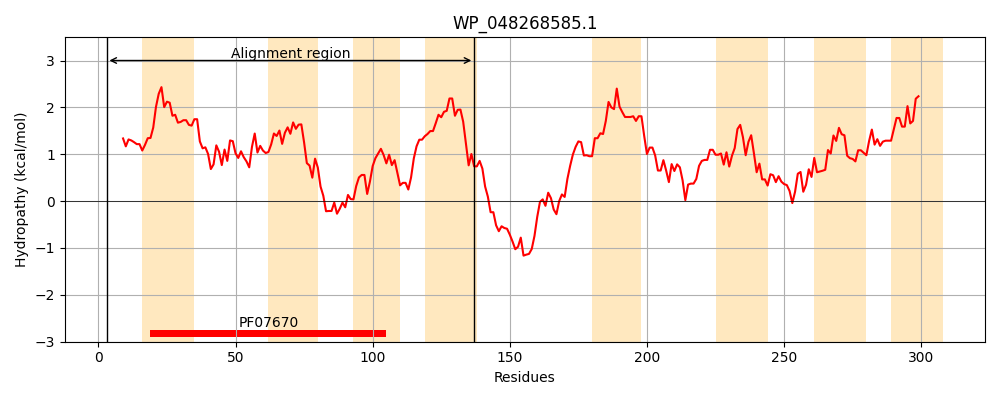
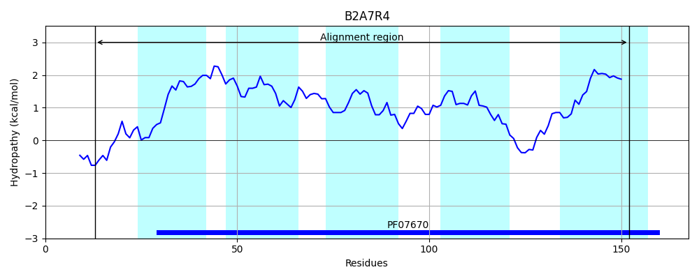
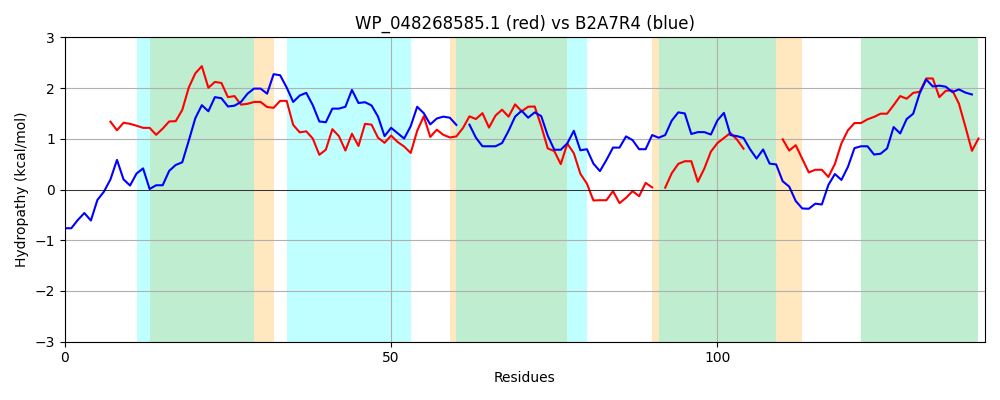

Hit Accession: B2A7R4
Hit TCID: 9.B.156.1.2
Hit Description: gnl|BL_ORD_ID|1688 gnl|TC-DB|B2A7R4|9.B.156.1.2 Nucleoside recognition domain protein OS=Natranaerobius thermophilus (strain ATCC BAA-1301 / DSM 18059 / JW/NM-WN-LF) GN=Nther_0779 PE=4 SV=1
Mach Len: 141
e:0.000003
Query TMS Count : 8
Hit TMS Count: 5
TMS-Overlap Score: 3.400000
Predicted Substrates:None
BLAST Alignment:
| Protein Hydropathy Plots: | |
|---|---|
|  |  |
Pairwise Alignment-Hydropathy Plot: | |
|  | |